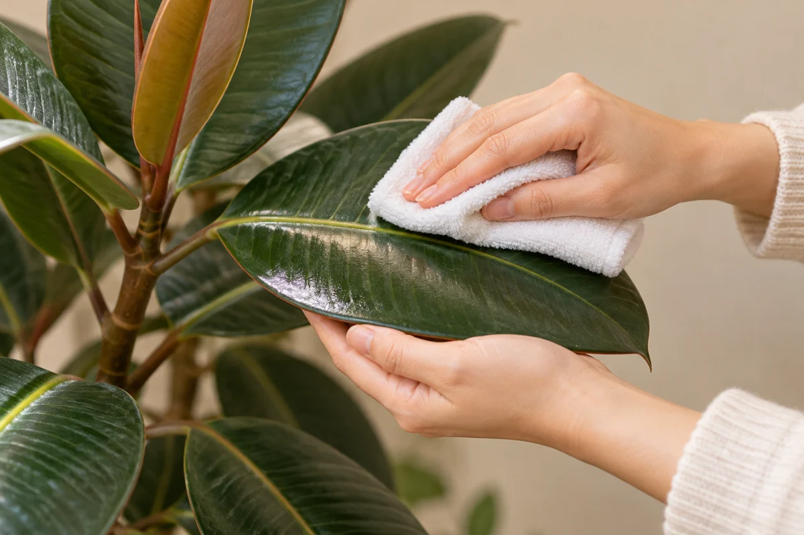

今日やることは、この3つ
- 葉裏を虫眼鏡で見て、動く点や細い糸を確認する。
- 疑わしい鉢を離し、ほかの株の葉裏も見る。
- 水洗いに向く植物か確認し、対処後も状態を記録する。
水やりや写真を記録して変化を振り返りたい方へ。RELOHAでできることを見る ↓
① 白い点だけでは、まだ決めない
ハダニでは葉の細かな色抜けや糸が手掛かりになります。ただし似た症状を起こす虫もあり、赤いものだけがハダニとは限りません。葉裏を拡大して確認し、白い紙を下に置いて葉を軽くたたき、落ちた点が動くかを見る方法もあります。［1］
② 見えたものを、短くメモする
| 気になる状態 | 先に確認すること |
|---|---|
| 細かな色抜けがある | 同じ葉の裏を拡大して見る。 |
| 葉や芽の周りに細い糸 | 糸の周囲と葉裏に小さな点がないか確認。 |
| 白い紙に動く点が落ちた | 拡大写真を残し、種類が不明なら園芸店へ相談。 |
| 点はあるが動くものが見えない | その場で断定せず、別の葉も確認。 |
相談用のメモ例は「上の葉3枚に点、下の葉には見えない。葉裏に動く点。糸は不明」。見えなかったことも残せば、思い込みで原因を絞りすぎずに済みます。
③ まず鉢を離し、洗える葉は水で対処
虫の問題が見つかった株は、ほかの株から離して広がりを防ぎます。水による洗浄は対処法の一つですが、葉が長時間ぬれたままにならない条件を選びます。［2］
柔らかな葉を強くこすらず、毛の多い葉など水洗いに向かない植物は種類の管理方法を確認してください。［3］洗い方は葉の掃除の基本も参考に。

④ 一度で終わりにせず、葉裏を再確認
対処した日と方法、気になる葉を記録し、その後も同じ葉と周囲の株を観察します。写真は全体と葉裏の2枚にすると見返しやすくなります。ここでいう記録は観察の補助で、駆除の成功を自動判定するものではありません。
広がる・種類が分からない場合は、植物名と写真を園芸店へ。薬剤を選ぶ際は、日本での登録内容と製品ラベルの対象植物・害虫・使い方を確認してください。家庭用洗剤を自己流で薄めて代用する方法は案内していません。［1］
よくある質問
ハダニは赤い虫？
赤いものに限らず色はさまざまです。色だけで決めず、拡大して葉裏や周りの様子を確認してください。
葉水だけでいなくなる？
霧吹きだけで解決したと判断せず、葉裏の状態を再確認しましょう。水に弱い葉もあるため、植物に合った方法を選びます。
土から飛ぶ虫もハダニ？
ハダニは飛びません。土の周りを飛ぶ虫は、別の虫の可能性を考えます。コバエの記事で確認手順を紹介しています。
参考情報と編集方針
大学の園芸情報を確認し、RELOHA編集部が家庭で確認しやすい順に整理しました。種類ごとの管理条件は購入店・生産者の案内を優先してください。
- メリーランド大学：家庭の庭と室内植物のダニ見分けの手掛かり、白い紙での確認、対処と薬剤ラベル
- カリフォルニア大学IPM：室内植物の問題問題のある株を離すこと、水洗いと乾燥条件
- イリノイ大学：観葉植物のお世話毛の多い葉などの洗浄の注意
出典確認日：2026年11月07日。RELOHAを運営する編集部による自社記事です。画像は実証・診断写真ではありません。海外の薬剤や気候条件をそのまま日本向けに推奨していません。